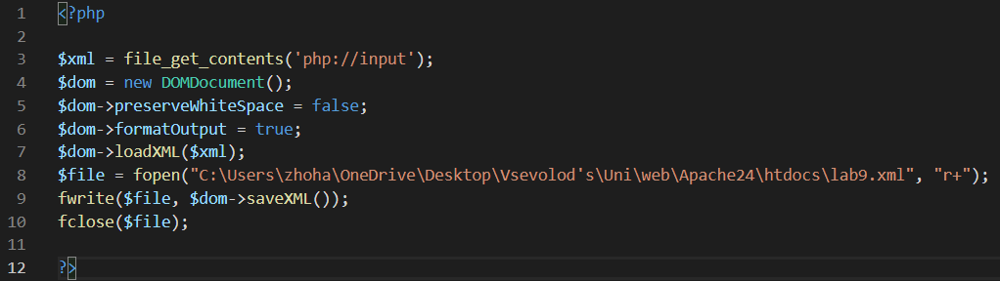

ЛАБОРАТОРНА РОБОТА №9
Тема: АСИНХРОННА ВЗАЄМОДІЯ КЛІЄНТСЬКОЇ І СЕРВЕРНОЇ ЧАСТИН WEB- ЗАСТОСУВАНЬ З ВИКОРИСТАННЯМ ТЕХНОЛОГІЇ AJAX. ФОРМУВАННЯ AJAX-ЗАПИТУ ЗАСОБАМИ JQUERY.
Мета: придбати практичні навички роботи основ асинхронного обміну даними мовою JavaScript за допомогою технології Ajax та бібліотеки Jquery, формування Аjax-запиту засобами jQuery при реалізації практичних задач Web-програмування.
довільний Ajax-запит
Показано та зроблено найпростіше застосування аякс-запиту на сторінці.
Зовнішній вигляд
HTML-файл
JS-скрипт
PHP-файл
Ajax-запит за варіантом таблиці
Було зроблено варіант №10 з таблиці.
Зовнішній вигляд сторінки
Сторінка передбачає перегляд запланованих справ(планувальник задач), а також додавання нових справ у вказану дату та час.
XML-файл
PHP-файл
JS-файл

Повний список функціоналу програми
Маємо головну сторінку з можливістю переключати мови на українську, англійську та іспанську.


Також реалізована можливість авторизації співробітника банку, після авторизації він може переглянути створену БД щодо клієнтів, які брали кредити, та їхні кредити.

Також ми маємо сторінку "Про нас", де є інформація про наш банк та як з нами зв'язатися
Сайт з функціоналом сайту
Усі інші завдання з лабораторних ми робили на окремих сторінках.
Порівняння функціоналу 1 та 9 лабораторних
Постановка задачі ЛР1:
Сайт призначений для людей, які мають рахунки у банку, щоб вони могли через цей веб застосунок швидше робити банківські операції та мати змогу отримати певну інформацію про стан їхніх рахунків.
Для незареєстрованого користувача буде доступна лише головна сторінка з описом банку та формою для входу або реєстрацією, тому що інформацію про рахунок у банку має змогу продивитись зареєстрований користувач зі свого особистого кабінету. Зареєстрований користувач може проводити різні операції з рахунком ( переглянути залишок на рахунку, переказати кошти на інший рахунок тощо), змінити логін або пароль від особистого кабінету, переглянути інформацію про банк(місцезнаходження філіалів, контактна інформація тощо).
У процесі розробки сайту та виконання лабораторних робіт ми вирішили створити авторизацію поки лише для співробітника банку, адже для реєстрації та логіну клієнта банку має бути керування цими клієнтами та перегляд їхніх дій. У подальшому, якщо сайт не втратить свою актуальність, ми плануємо все-таки досягти поставлену задачу та мати повнофункціональний сайт зі входом як для співробітників банку, так і для клієнтів. Це знадобиться нам, наприклад, для резюме, подальшої розробки сайту електронного банку, або просто для досвіду.
Висновки
У цій лабораторній роботі ми зробили аякс-запити за допомогою бібліотеки JQuery. Також ми проаналізували повний функціонал нашого сайту за семестр роботи та зрозуміли, що можна додати, що змінити.